图解LayerNorm & BatchNorm¶
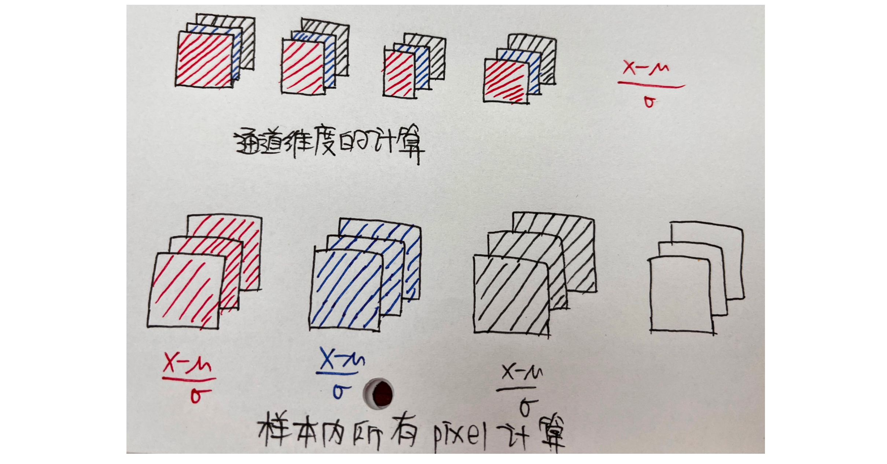


BatchNorm1D、NLP¶
b=2，n=3，d=4
- 理解 3维张量、4维张量：
\(\begin{cases} 矩阵法:2个3×4的矩阵 \\ \\ 抽屉法:一直划分同一个方向，直到最后一个维度，画另一个方向 \end{cases}\)
都是横排和竖排的数字排列，不同维度的张量表示不同的分组
怎么理解nlp中的三维张量？¶
- 矩阵法：
2个3×4的矩阵，图解：

- 抽屉法
（第一次真正开始理解多维张量是好朋友拿抽屉给我举得例子，四维张量就是抽屉里面还有抽屉）
要点：一直沿同一个方向划分，直到最后一维换方向
2×3×4

：逻辑理顺了，感觉自己做这些东西蠢蠢的......但是，我记性不好，总忘......笨就笨吧，（凌妙妙口吻：师傅天天说人家笨，可人家本来就是笨）
- 实际意义
对于nlp来说，bnd=234表示b个句子，每个句子n个词，每个词有d个维度
\(batch\_size × max\_sequence\_length × model\_dim\)
就是说 现在有 2个句子，每个句子3个单词，每个单词用4维向量表示

这里的问题是：我们这个元素的个数都是对的，但是在计算机中存储中，并不是这么存的
- 实际意义 & 矩阵法 & 计算机存储逻辑

1 2 3 4 5 6 | |
输出：
1 2 3 4 5 6 7 | |
-
torch.randn&torch.rand
现在开始nlp&BN，图形结合，例子，数学例子，不要脱离实际意义
也就是说
输入：三维张量，也可以理解为二维数表，用括号分组，所以有了不同的意义
怎么计算BN1D？¶

1 2 | |
输出：
1 | |
好嘟，这串代码是没有任何问题了
代码实现¶
库函数要的输入格式：bnd \(\rightarrow\) bdn
- 说一下这边的转置 .transpose(-1,-2)
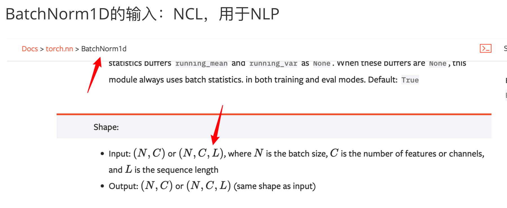
官网api给了，输入bdn，输出bdn，所以输出以后再transpose，变成bnd
还有一点，不管是BN还是LN都是不改变形状的
1 2 3 4 5 6 7 8 9 10 11 12 13 14 15 16 17 18 19 20 | |
输出：
1 2 3 4 5 6 7 8 9 10 11 12 13 14 15 | |
BN2D¶
图片的存储格式：bchw
计算BN
自己脑袋里想的：

计算机认识的：
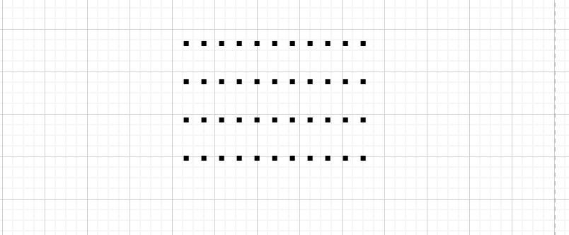
加括号，就变成了张量
计算机与实际意义联系起来：优先竖排，最后一维横排
如图，4×3×2×2

BN与CV¶
bchw \(\rightarrow\) 1c11
对 bhw个数求和 计算 均值和方差

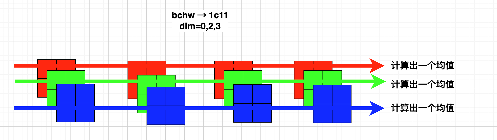
step1
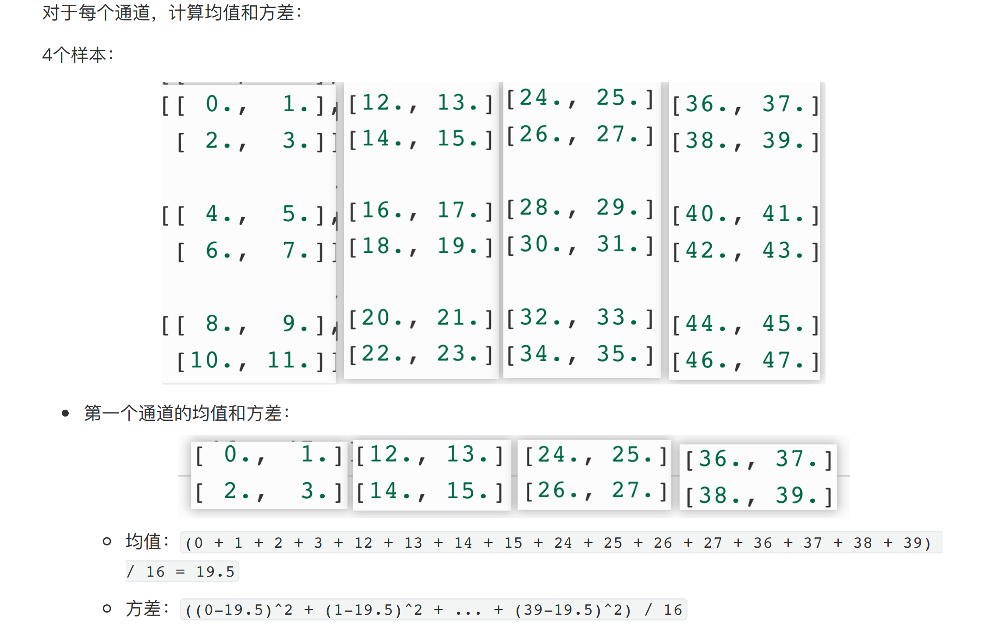
step2

step3
第三个通道的均值和⽅差：

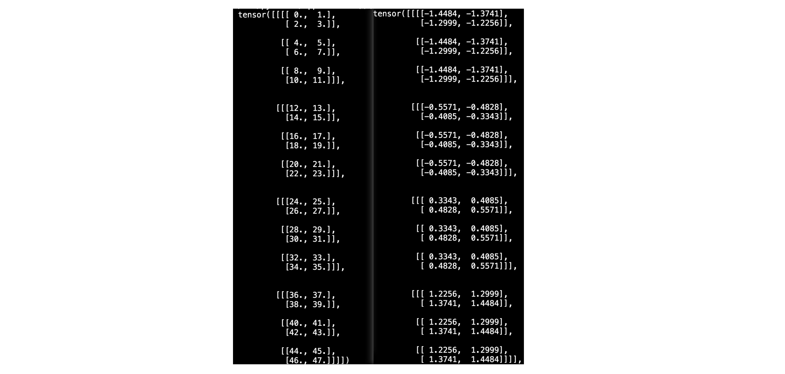
代码¶
1 2 3 4 5 6 7 8 9 10 11 12 | |
均值 & 方差代码：
1 2 3 4 5 | |
输出：
1 2 | |
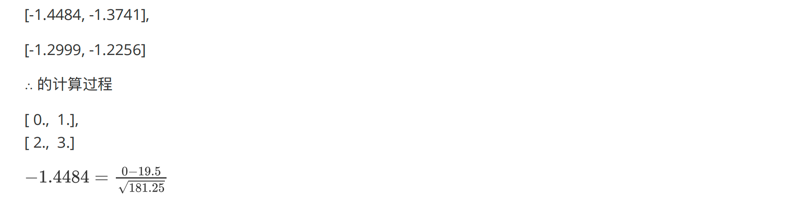
LN1D¶
文字描述、实际意义¶
- LN是对每个词的所有特征进行归一化
类比到二维数表是对 横行样本行进行归一化
- BN是对同一个特征的所有样本进行归一化
类比到二维数表 就是对列进行归一化
- 我觉得理解LN就一句话牢牢记住：per sample、per layer！尤其是per sample
有几个样本、就有几个均值&方差、类似的
有几个词，就有均值 bnd → 1n1
有几张图片，就有几个均值 bchw→b111
来，在折腾一下，for BN，特征多少维，就是几个均值
bnd→11d
bchw→1c11
- 二维数表的格式：

图示¶
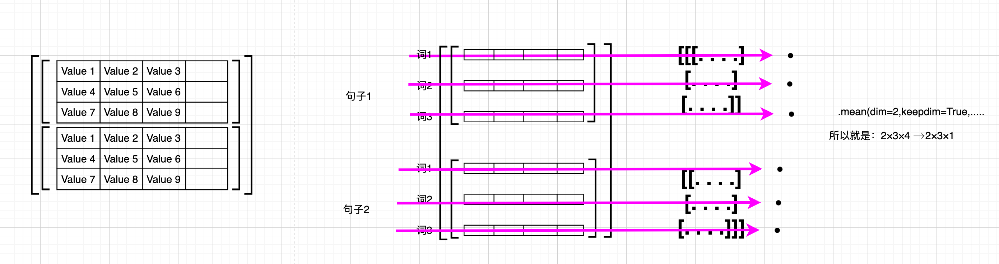
对比：BN1D & LN1D
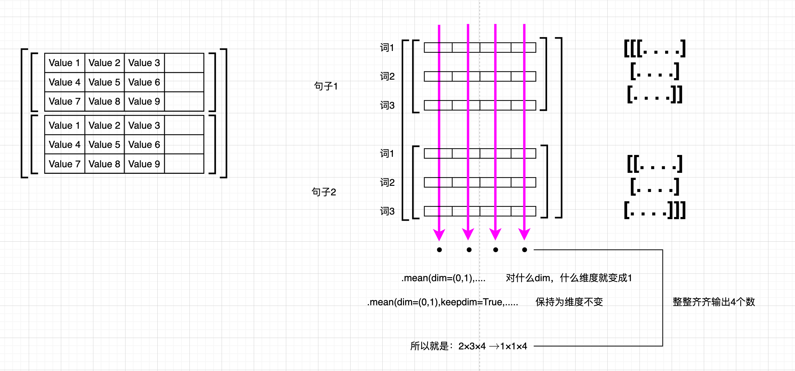
数学例子¶
见：5种归一化方法
代码实现¶
见：5种归一化方法
LN2D¶
文字描述¶
per sample
数学例子¶
1 2 3 4 5 6 7 8 9 10 11 | |
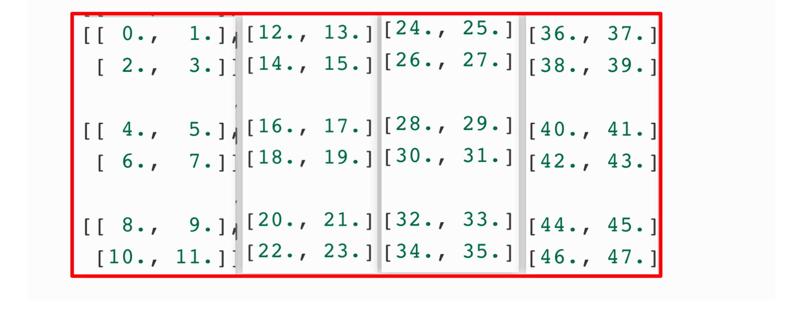


图示¶
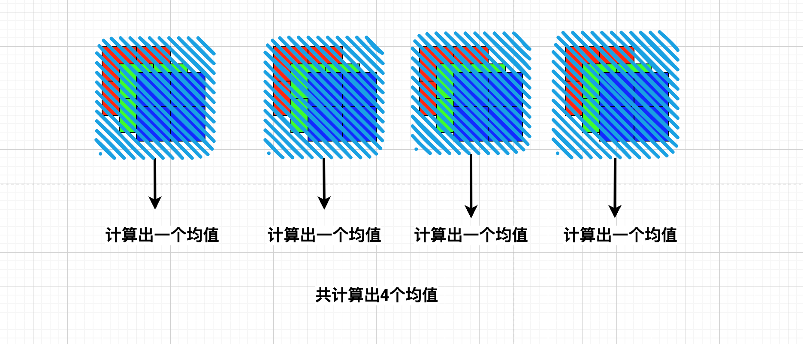
对比：
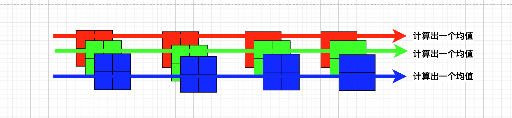
代码实现¶
1 2 3 4 5 6 7 8 9 10 11 12 13 14 15 16 17 18 19 20 21 22 23 24 25 26 27 28 29 30 31 32 33 34 35 36 37 38 39 40 41 42 43 44 45 46 47 48 49 50 51 52 53 | |
总结¶
所有的图示 再看一遍
BN常用于CV
LN常用于NLP
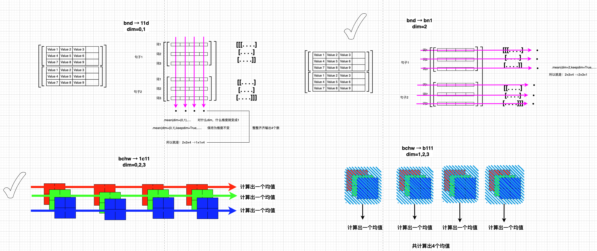